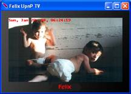
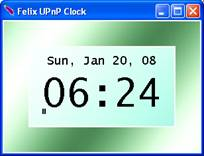
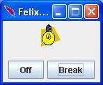
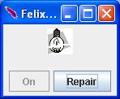
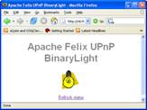

The Felix UPnP Examples
The UPnP examples released by the UPnP project are simple UPnP devices developed as a proof of concept. The first two examples, the TV and Clock, are used to check the importing and exporting capabilities of the base driver. The third one, the Binary Light, implements a standard UPnP DCP and provides additionally a UPnP presentation page.
Sample TV and Clock
These devices are dual version of the sample devices developed by the project "Cyberlink for Java" by Satoshi Konno. They have been rewritten according to the OSGi specification and can be used to check the importing and exporting capabilities of the base driver. The simulated TV screen is used to show the messages received by the Clock device and other simulated device like the Air Conditionator and Washing Machine. When launching the original version of such devices you will see that the Felix TV running on the OSGi platform is able to receive the messages from UPnP devices running on different platform and imported in OSGi. At the same time, the Cyberlink TV is able to receive the time event generated by the Felix Clock device and exported by the base driver.
|  |  |
| Figure 7 The Felix UPnP TV GUI | Figure 8 The Felix UPnP Clock GUI |
If you want to avoid installing the Cyberlink devices, you can run a second instance of Felix by clicking on the batch file again. In this case the Felix TV and Clock will be exported and re-imported by both Felix runtimes and you will see a duplicated TV and Clock device on each platform. Notice that you can stop in any moment a device by closing its window. You can start it again from the Felix shell by selecting the respective bundle ID. Starting with two running instances of the Felix Clock, you can stop the first one and the TVs will lose for a moment the time signal. In fact, being subscribed to the Clock device type and not to a specific device instance, they will receive the time event from the remaining device Clock. One TV will be notified from the clock running on the same platform, while the other will receive the events from an imported TV device. As soon as you stop also the second clock device, the Time message will disappear from both the TVs.
The BinaryLight example
The Binary Light device, according the UPnP DCP, shows a graphical interface you can use to switch on/off the light and to simulate the breaking of the lamp bulb. In this last circumstance you can see, by using the Felix UPnPDevice Tester interface, that the values of the "Status" and "Target" variable may be different. While the "Target" variable represents the expected status after invoking the related action, the "Status" variable describes the real status of the Light Device.
This example, by exploiting the Felix HTTP Service implementation, installs a UPnP presentation page. By code you can retrieve the presentation page URL by looking for the service property called "UPnP.presentationURL". This property is also visible, as link, through the interface provided by the Tester bundle. Accessing the presentation page by means of a web browser you can switch the light status by clicking on the Light image: the icon on the device windows changes accordingly.
|  |  |  |
Figure 9 The BinaryLight GUI and the presentation page
The source code for the Binary light is slightly different from the one for TV and Clock code because it has been written starting from a Light model which notifies its changes through the PropertyChangeListener interface.